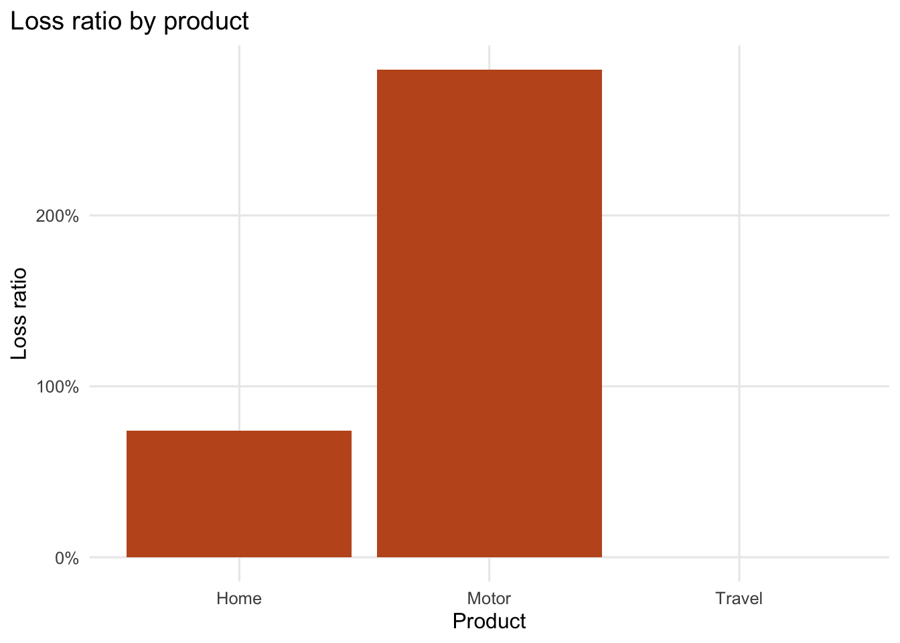
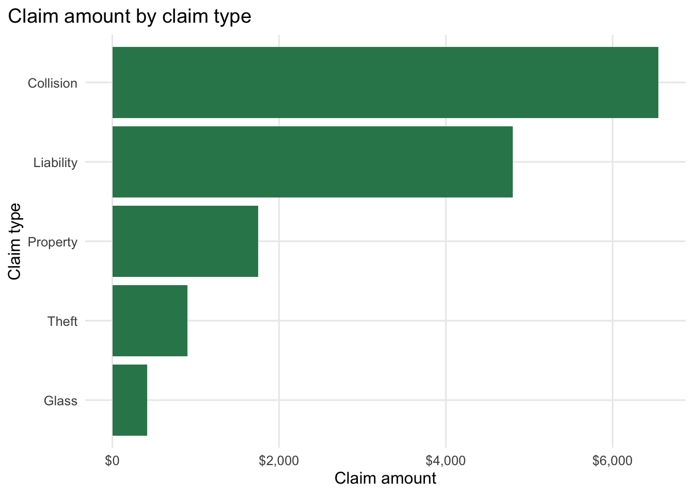
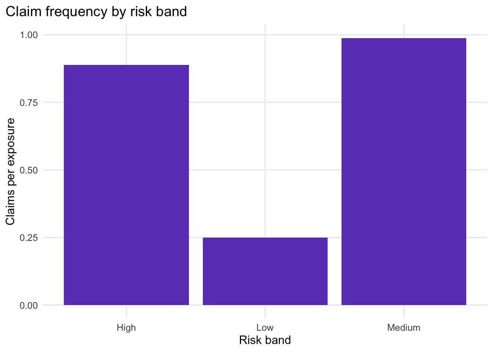

# These packages are enough for the whole mini-project.
# dplyr: data manipulation
# readr: reading and writing CSV files
# ggplot2: charts
# scales: axis labels such as percentages and currency
# knitr: simple tables in the rendered report
library(dplyr)
library(readr)
library(ggplot2)
library(scales)
library(knitr)Actuarial Mini-Project
From raw policy and claims data to a reproducible Quarto report
Objective
Build a reproducible actuarial analysis from simplified policy and claims data. This notebook is the source of truth for the course: each teaching session unpacks one part of this workflow.
The professional goal is simple:
Write code that another actuary can understand, reproduce, and trust.
Workflow
- Import
policies.csvandclaims.csv. - Validate row counts, missing values, duplicates, keys, dates, and numeric ranges.
- Join policy and claim records.
- Create derived actuarial measures: claim frequency, average severity, pure premium, and loss ratio.
- Summarise results by product, region, age band, and risk score band.
- Create charts for communication.
- Save the clean processed dataset.
1. Import The Data
We start by reading the raw data. Keeping raw data in data/raw/ makes the analysis easier to reproduce because the original inputs are separated from any processed outputs.
policies <- read_csv("../data/raw/policies.csv", show_col_types = FALSE)
claims <- read_csv("../data/raw/claims.csv", show_col_types = FALSE)
# Convert date columns from text to Date objects.
# This lets R compare dates correctly later.
policies <- policies |>
mutate(policy_start = as.Date(policy_start))
claims <- claims |>
mutate(claim_date = as.Date(claim_date))
glimpse(policies)Rows: 12
Columns: 9
$ policy_id <chr> "P0001", "P0002", "P0003", "P0004", "P0005", "P0006", …
$ policyholder_id <chr> "H001", "H002", "H003", "H004", "H005", "H006", "H007"…
$ product <chr> "Motor", "Motor", "Home", "Motor", "Travel", "Home", "…
$ region <chr> "North", "South", "North", "West", "East", "South", "E…
$ driver_age <dbl> 24, 41, 55, 32, 29, 67, 21, 48, 36, 62, 44, 39
$ risk_score <dbl> 0.72, 0.38, 0.31, 0.64, 0.44, 0.58, 0.81, 0.27, 0.52, …
$ exposure <dbl> 1.00, 1.00, 1.00, 0.75, 0.50, 1.00, 1.00, 1.00, 0.80, …
$ earned_premium <dbl> 820, 610, 540, 690, 180, 760, 980, 500, 700, 240, 640,…
$ policy_start <date> 2025-01-01, 2025-01-15, 2025-02-01, 2025-03-01, 2025-0…glimpse(claims)Rows: 8
Columns: 6
$ claim_id <chr> "C0001", "C0002", "C0003", "C0004", "C0005", "C0006", "C0…
$ policy_id <chr> "P0001", "P0002", "P0004", "P0006", "P0007", "P0009", "P0…
$ claim_date <date> 2025-02-14, 2025-04-02, 2025-05-20, 2025-06-11, 2025-07-…
$ claim_type <chr> "Collision", "Theft", "Collision", "Property", "Collision…
$ claim_amount <dbl> 1250, 900, 2200, 1750, 3100, 420, 4800, 700
$ closed <lgl> TRUE, TRUE, FALSE, TRUE, FALSE, TRUE, FALSE, TRUE2. Validate The Data
Data validation is actuarial work. Before calculating any metrics, we check whether the data is complete, consistent, and suitable for analysis.
Row Counts
row_counts <- tibble(
dataset = c("policies", "claims"),
rows = c(nrow(policies), nrow(claims)),
columns = c(ncol(policies), ncol(claims))
)
kable(row_counts)| dataset | rows | columns |
|---|---|---|
| policies | 12 | 9 |
| claims | 8 | 6 |
Missing Values
# Count missing values in every column of a data frame.
count_missing <- function(data, dataset_name) {
data |>
summarise(across(everything(), ~ sum(is.na(.x)))) |>
tidyr::pivot_longer(
cols = everything(),
names_to = "column",
values_to = "missing_values"
) |>
mutate(dataset = dataset_name, .before = column)
}
missing_summary <- bind_rows(
count_missing(policies, "policies"),
count_missing(claims, "claims")
)
kable(missing_summary)| dataset | column | missing_values |
|---|---|---|
| policies | policy_id | 0 |
| policies | policyholder_id | 0 |
| policies | product | 0 |
| policies | region | 0 |
| policies | driver_age | 0 |
| policies | risk_score | 0 |
| policies | exposure | 0 |
| policies | earned_premium | 0 |
| policies | policy_start | 0 |
| claims | claim_id | 0 |
| claims | policy_id | 0 |
| claims | claim_date | 0 |
| claims | claim_type | 0 |
| claims | claim_amount | 0 |
| claims | closed | 0 |
Duplicate Identifiers
duplicate_checks <- tibble(
check = c("Duplicate policy_id in policies", "Duplicate claim_id in claims"),
duplicates = c(
sum(duplicated(policies$policy_id)),
sum(duplicated(claims$claim_id))
)
)
kable(duplicate_checks)| check | duplicates |
|---|---|
| Duplicate policy_id in policies | 0 |
| Duplicate claim_id in claims | 0 |
Policy ID Checks
Every claim should connect to a policy. This check finds claims with a policy_id that does not appear in the policy file.
unmatched_claims <- claims |>
anti_join(policies, by = "policy_id")
kable(unmatched_claims)| claim_id | policy_id | claim_date | claim_type | claim_amount | closed |
|---|---|---|---|---|---|
| C0008 | P0999 | 2025-09-22 | Collision | 700 | TRUE |
The sample data intentionally includes one unmatched claim so participants can practice finding key problems.
Claim Dates Versus Policy Dates
A claim date before the policy start date should be investigated. This check only applies to claims that successfully match a policy.
claim_date_checks <- claims |>
inner_join(policies |> select(policy_id, policy_start), by = "policy_id") |>
mutate(claim_before_policy_start = claim_date < policy_start)
claims_before_policy_start <- claim_date_checks |>
filter(claim_before_policy_start)
kable(claims_before_policy_start)| claim_id | policy_id | claim_date | claim_type | claim_amount | closed | policy_start | claim_before_policy_start |
|---|
Numeric Range Checks
These checks are deliberately simple. They are here to teach the habit of asking whether values are plausible before using them.
range_checks <- tibble(
check = c(
"Driver age outside 16 to 100",
"Risk score outside 0 to 1",
"Exposure less than or equal to 0",
"Earned premium less than 0",
"Claim amount less than 0"
),
flagged_rows = c(
sum(policies$driver_age < 16 | policies$driver_age > 100, na.rm = TRUE),
sum(policies$risk_score < 0 | policies$risk_score > 1, na.rm = TRUE),
sum(policies$exposure <= 0, na.rm = TRUE),
sum(policies$earned_premium < 0, na.rm = TRUE),
sum(claims$claim_amount < 0, na.rm = TRUE)
)
)
kable(range_checks)| check | flagged_rows |
|---|---|
| Driver age outside 16 to 100 | 0 |
| Risk score outside 0 to 1 | 0 |
| Exposure less than or equal to 0 | 0 |
| Earned premium less than 0 | 0 |
| Claim amount less than 0 | 0 |
3. Create A Joined Portfolio Dataset
For most summaries, we want one row per policy. We first summarise valid claims by policy, then join those claim totals back to the policy data.
# Keep only claims that match a known policy.
# The unmatched claim remains documented above, but is excluded from portfolio metrics.
valid_claims <- claims |>
semi_join(policies, by = "policy_id")
claims_by_policy <- valid_claims |>
group_by(policy_id) |>
summarise(
claim_count = n(),
claim_amount = sum(claim_amount, na.rm = TRUE),
first_claim_date = min(claim_date),
has_open_claim = any(!closed),
.groups = "drop"
)
portfolio <- policies |>
left_join(claims_by_policy, by = "policy_id") |>
mutate(
# Policies with no claims should have zero claim count and zero claim amount.
claim_count = if_else(is.na(claim_count), 0L, claim_count),
claim_amount = if_else(is.na(claim_amount), 0, claim_amount),
has_open_claim = if_else(is.na(has_open_claim), FALSE, has_open_claim)
)
kable(portfolio)| policy_id | policyholder_id | product | region | driver_age | risk_score | exposure | earned_premium | policy_start | claim_count | claim_amount | first_claim_date | has_open_claim |
|---|---|---|---|---|---|---|---|---|---|---|---|---|
| P0001 | H001 | Motor | North | 24 | 0.72 | 1.00 | 820 | 2025-01-01 | 1 | 1250 | 2025-02-14 | FALSE |
| P0002 | H002 | Motor | South | 41 | 0.38 | 1.00 | 610 | 2025-01-15 | 1 | 900 | 2025-04-02 | FALSE |
| P0003 | H003 | Home | North | 55 | 0.31 | 1.00 | 540 | 2025-02-01 | 0 | 0 | NA | FALSE |
| P0004 | H004 | Motor | West | 32 | 0.64 | 0.75 | 690 | 2025-03-01 | 1 | 2200 | 2025-05-20 | TRUE |
| P0005 | H005 | Travel | East | 29 | 0.44 | 0.50 | 180 | 2025-03-15 | 0 | 0 | NA | FALSE |
| P0006 | H006 | Home | South | 67 | 0.58 | 1.00 | 760 | 2025-04-01 | 1 | 1750 | 2025-06-11 | FALSE |
| P0007 | H007 | Motor | East | 21 | 0.81 | 1.00 | 980 | 2025-04-10 | 1 | 3100 | 2025-07-09 | TRUE |
| P0008 | H008 | Home | West | 48 | 0.27 | 1.00 | 500 | 2025-05-01 | 0 | 0 | NA | FALSE |
| P0009 | H009 | Motor | North | 36 | 0.52 | 0.80 | 700 | 2025-05-15 | 1 | 420 | 2025-08-18 | FALSE |
| P0010 | H010 | Travel | South | 62 | 0.69 | 0.25 | 240 | 2025-06-01 | 0 | 0 | NA | FALSE |
| P0011 | H011 | Motor | West | 44 | 0.46 | 1.00 | 640 | 2025-06-10 | 1 | 4800 | 2025-09-03 | TRUE |
| P0012 | H012 | Home | East | 39 | 0.35 | 1.00 | 560 | 2025-07-01 | 0 | 0 | NA | FALSE |
4. Add Derived Actuarial Measures
These measures are simplified for teaching. They introduce the core ideas without turning the workshop into an advanced pricing course.
portfolio <- portfolio |>
mutate(
age_band = cut(
driver_age,
breaks = c(0, 25, 40, 60, Inf),
labels = c("Under 25", "25-40", "41-60", "61+"),
right = FALSE
),
risk_band = case_when(
risk_score < 0.40 ~ "Low",
risk_score < 0.65 ~ "Medium",
TRUE ~ "High"
),
claim_frequency = claim_count / exposure,
average_severity = if_else(claim_count > 0, claim_amount / claim_count, 0),
pure_premium = claim_amount / exposure,
loss_ratio = claim_amount / earned_premium
)
kable(
portfolio |>
select(
policy_id, product, region, exposure, earned_premium,
claim_count, claim_amount, claim_frequency,
average_severity, pure_premium, loss_ratio
)
)| policy_id | product | region | exposure | earned_premium | claim_count | claim_amount | claim_frequency | average_severity | pure_premium | loss_ratio |
|---|---|---|---|---|---|---|---|---|---|---|
| P0001 | Motor | North | 1.00 | 820 | 1 | 1250 | 1.000000 | 1250 | 1250.000 | 1.524390 |
| P0002 | Motor | South | 1.00 | 610 | 1 | 900 | 1.000000 | 900 | 900.000 | 1.475410 |
| P0003 | Home | North | 1.00 | 540 | 0 | 0 | 0.000000 | 0 | 0.000 | 0.000000 |
| P0004 | Motor | West | 0.75 | 690 | 1 | 2200 | 1.333333 | 2200 | 2933.333 | 3.188406 |
| P0005 | Travel | East | 0.50 | 180 | 0 | 0 | 0.000000 | 0 | 0.000 | 0.000000 |
| P0006 | Home | South | 1.00 | 760 | 1 | 1750 | 1.000000 | 1750 | 1750.000 | 2.302632 |
| P0007 | Motor | East | 1.00 | 980 | 1 | 3100 | 1.000000 | 3100 | 3100.000 | 3.163265 |
| P0008 | Home | West | 1.00 | 500 | 0 | 0 | 0.000000 | 0 | 0.000 | 0.000000 |
| P0009 | Motor | North | 0.80 | 700 | 1 | 420 | 1.250000 | 420 | 525.000 | 0.600000 |
| P0010 | Travel | South | 0.25 | 240 | 0 | 0 | 0.000000 | 0 | 0.000 | 0.000000 |
| P0011 | Motor | West | 1.00 | 640 | 1 | 4800 | 1.000000 | 4800 | 4800.000 | 7.500000 |
| P0012 | Home | East | 1.00 | 560 | 0 | 0 | 0.000000 | 0 | 0.000 | 0.000000 |
Portfolio-Level Metrics
portfolio_metrics <- portfolio |>
summarise(
policies = n(),
total_exposure = sum(exposure),
total_earned_premium = sum(earned_premium),
total_claim_count = sum(claim_count),
total_claim_amount = sum(claim_amount),
claim_frequency = total_claim_count / total_exposure,
average_severity = total_claim_amount / total_claim_count,
pure_premium = total_claim_amount / total_exposure,
loss_ratio = total_claim_amount / total_earned_premium
)
kable(portfolio_metrics)| policies | total_exposure | total_earned_premium | total_claim_count | total_claim_amount | claim_frequency | average_severity | pure_premium | loss_ratio |
|---|---|---|---|---|---|---|---|---|
| 12 | 10.3 | 7220 | 7 | 14420 | 0.6796117 | 2060 | 1400 | 1.99723 |
Segment Summaries
# A small reusable function keeps repeated summaries consistent.
summarise_segment <- function(data, group_variable) {
data |>
group_by({{ group_variable }}) |>
summarise(
policies = n(),
exposure = sum(exposure),
earned_premium = sum(earned_premium),
claim_count = sum(claim_count),
claim_amount = sum(claim_amount),
claim_frequency = claim_count / exposure,
average_severity = if_else(claim_count > 0, claim_amount / claim_count, 0),
pure_premium = claim_amount / exposure,
loss_ratio = claim_amount / earned_premium,
.groups = "drop"
)
}
summary_by_product <- summarise_segment(portfolio, product)
summary_by_region <- summarise_segment(portfolio, region)
summary_by_age <- summarise_segment(portfolio, age_band)
summary_by_risk <- summarise_segment(portfolio, risk_band)
kable(summary_by_product)| product | policies | exposure | earned_premium | claim_count | claim_amount | claim_frequency | average_severity | pure_premium | loss_ratio |
|---|---|---|---|---|---|---|---|---|---|
| Home | 4 | 4.00 | 2360 | 1 | 1750 | 0.250000 | 1750.000 | 437.500 | 0.7415254 |
| Motor | 6 | 5.55 | 4440 | 6 | 12670 | 1.081081 | 2111.667 | 2282.883 | 2.8536036 |
| Travel | 2 | 0.75 | 420 | 0 | 0 | 0.000000 | 0.000 | 0.000 | 0.0000000 |
5. Communicate Results With Reusable Plots
These plots become the starting point for Session 3. They are intentionally simple: each chart should answer one actuarial question.
theme_actex <- function() {
theme_minimal(base_size = 12) +
theme(
plot.title.position = "plot",
panel.grid.minor = element_blank(),
legend.position = "bottom"
)
}Plot 2: Loss Ratio By Product
ggplot(summary_by_product, aes(x = product, y = loss_ratio)) +
geom_col(fill = "#C05621") +
scale_y_continuous(labels = percent) +
labs(
title = "Loss ratio by product",
x = "Product",
y = "Loss ratio"
) +
theme_actex()
Plot 3: Claim Amount By Claim Type
valid_claims |>
group_by(claim_type) |>
summarise(claim_amount = sum(claim_amount), .groups = "drop") |>
ggplot(aes(x = reorder(claim_type, claim_amount), y = claim_amount)) +
geom_col(fill = "#2F855A") +
coord_flip() +
scale_y_continuous(labels = dollar) +
labs(
title = "Claim amount by claim type",
x = "Claim type",
y = "Claim amount"
) +
theme_actex()
Plot 4: Claim Frequency By Risk Band
ggplot(summary_by_risk, aes(x = risk_band, y = claim_frequency)) +
geom_col(fill = "#6B46C1") +
scale_y_continuous(labels = number_format(accuracy = 0.01)) +
labs(
title = "Claim frequency by risk band",
x = "Risk band",
y = "Claims per exposure"
) +
theme_actex()
6. Save The Processed Dataset
The processed dataset is saved after validation and derivation. This file can be reused in later exercises, but the notebook shows exactly how it was created.
dir.create("../data/processed", showWarnings = FALSE, recursive = TRUE)
write_csv(portfolio, "../data/processed/portfolio_clean.csv")Final Notes
This mini-project is intentionally compact. It gives participants a complete workflow they can understand in three short sessions:
- Session 1 focuses on importing and validating the raw files.
- Session 2 focuses on joining, deriving, and summarising.
- Session 3 focuses on visualising and reporting.